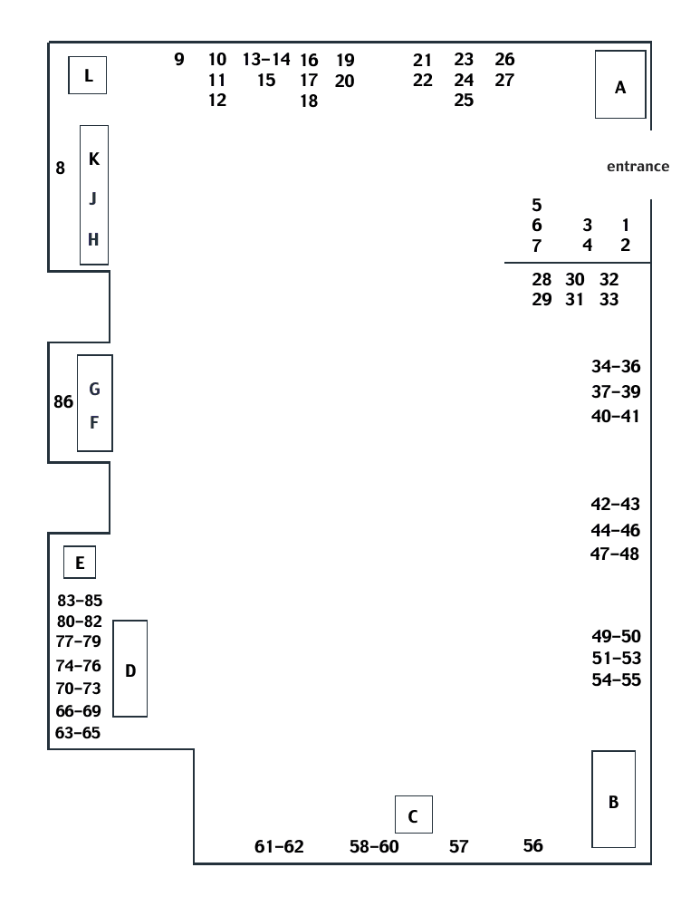

Pixel Palettes
40 Years of Digital Art at Scripps College
October 21 – December 4, 2026 · Clark Humanities Museum
Scrolling through 40 Years of Digital Art at Scripps College
They say Utopia is the good place that is no place. I suppose you can experience utopia wherever you go depending on your attitude and your expectations. That has been my experience teaching at Scripps College. Is it possible to have a dream job? A beautiful, small liberal arts college in sunny southern California for women comes pretty close. Although Scripps doesn’t represent itself as a feminist institution, many of us who teach here know that we can express our feminist views with our students and our colleagues. One of the strongest tenants of my teaching has always been mentoring and guiding young women to find their voice, to have the confidence to be independent, and to be willing to take risks on their journey. It has been a privilege to have this opportunity. And if that wasn’t enough, being given the unanticipated opportunity to figure out how to teach art with computers was yet another exciting possibility. What a great responsibility to be given!
I was hired at Scripps College in 1986 in a two-year position to teach beginning drawing and design, as well as printmaking, which at the time was called graphics. In my first year, Arthur Stevens, the chair of the art and art history department, asked me if I would be interested in teaching computer graphics. I didn’t know much about it, but I was interested. I found a program in Los Angeles run by Otis Art Institute and Parsons School of Design that had a two-year certificate program. I enrolled and began to learn C programming in order to learn the basics of using a computer and using it to make images.
In the late 1980s, no one I knew had a personal computer. The height of my technology was an electric typewriter with a backspace corrector. Although the idea of teaching art using computers sounded daunting, it also sounded exciting and challenging. This was an untainted field of inquiry—a space to experiment and test limits. A technology that was fairly undefined at that time meant that you really couldn’t do anything wrong. What a great playing field for exploring, not only intellectual approaches to art, but also the tenants of feminism. Speculative science fiction by women writers was one of the great territories where feminist ideas and visions were explored and discerned. What better space to reference as a foundation in which to place images exploring women’s experiences of inequality, oppression, and social injustice. This approach informed the development of future curricula designed to foster critical conversations about culture and women’s lived experiences within it.
I completed the computer graphics certificate program in 1988 and began my career at Scripps as a tenure track faculty member that fall. There were now a few burgeoning visual software coming on the market: Cricket Draw, Aldus Freehand and SuperPaint. They offered very simple tools and a very limited palette, but it gave us an opportunity to be visually creative. In the fall of 1989, the College acquired their first three Macintosh computers –despite being a PC-only school-- and we set up in Humanities 121, surrounded by fifteen IBM computers. I offered “beginning computer art” and by fall of 1991 advanced computer graphics. I had about 10 students in each class. We did our best to test the limits of these programs and challenge them as we created work about color theory and visual design. I transposed my curriculum from my “Beginning Drawing and Design” course to the “Beginning Computer Art” course as a gateway to understanding what we could do on the computers. I also received great tutoring from Jonathan Knowles at Harvey Mudd College, where they were just starting to set up a Mac lab. In April of 1993, work by advanced students in computer art were shown in “ELECTRONICA: Images from Within” at the Hilton Community Gallery in the Hilton Hotel in Pasadena.
A key software that was released in 1989 was PixelPaint Professional 1.0. This was among the early programs designed to take advantage of the Macintosh II’s color capabilities. It was a raster, or pixel-based, graphics editor for the Macintosh and is described as the first full-color paint application for the Macintosh. This software provided opportunities to create more visually dynamic work and the curriculum expanded to include more theme-based concepts and prompts. It also opened up a new type of digital-art environment: color pixel-based “painting” rather than the predominantly monochrome Macintosh graphics environment that preceded it. We worked with this software until the release of the Adobe suite of Photoshop and Illustrator, and later InDesign and Premiere.PixelPaint, which visitors to this exhibition can experiment with (station D), was instrumental to the development of my artistic practice at that time. Prior to coming to Scripps, my practice moved between painting, works on paper and printmaking, which I was continuing to follow in Claremont. PixelPaint gave me the opportunity to translate my painting imagery into a pixel-based format that relied on luminous screen light to be realized.
One of the first pieces of auxiliary equipment we added was an Apple flatbed scanner. Scanning created a bridge between physical and digital art-making. Instead of creating everything inside the computer, we could now begin with a photograph, drawing, collage element, texture, or other physical source, digitize it, and then make the scanned image part of a computer-based artwork. As a result, the addition of the scanner became a critical component of my printmaking course, “Moving Between Media: Traditional and Digital Printmaking.”
In 1994 the art department moved from Seal Pond to the Lang building. A classroom was dedicated to computer graphics, which by then we were referring to as computer-generated art. We set up a lab with 10 Macintosh computers which made it easier to offer the course to more students. We had great names for each station like Ada Lovelace, Electronica, Nanotek, Vidietta and Orbit Girl. The room was equipped with a very large marble conference table which provided ample space for a seminar and student discussions. At that time there was staff support for administrative computing but very little for academic computing—very few faculty had their own computers and providing one for each faculty member evolved over time. Eventually administrative and academic computing were united under one department, Information Technology, directed by Nancy Krimmer nee Parker ’84. During this time, I was responsible for all maintenance and support for the computers in Lang 214. Loading new versions of software, trouble shooting and setting up new equipment. In 1995 Jeff Sessler (the current IT Director) was hired as the primary Macintosh support person in IT and it was so helpful to have another person to confer with and to share the responsibilities of the lab.
When we moved into Lang 214, we migrated to working with the Adobe Suite. I realized that my approach to using the software was through the lens of someone trained as a printmaker and not a photographer or graphic designer. This created a very different approach to teaching using this software particularly Photoshop. Rather than demonstrate how PS translated darkroom methods into similar tools I was more interested in having the students create layered images that utilized the scanner, changes in opacity and blend modes. In addition, I found that my earlier studies in the Computer Certificate Program assisted me in learning and then teaching HTML and web design using Dreamweaver.
It has been amazing and gratifying to see the growth and expansion of digital art and digital technology at Scripps. The foundational courses that I created were amplified by the addition of new faculty. Ken Gonzales-Day arrived in 1995 to teach photography and later offered courses in digital color photography. His students were some of the first to create a bridge between black-and-white photography and digital art. Kim-Trang Tran joined us in 1999 teaching all levels of video and web projects, using digital software like Macro Media and Adobe Premiere. Aly Ogasian joined the faculty in the art department in 2020 with an expertise in digital fabrication and new technology that became the foundation of the recently created Fab Lab.
In 1992 I began to team teach with Jan Sellery at HMC for Media Studio: Multi-Image Programs. The art department’s initial contributions to the media studies program became fundamental to the digital electronic track in that major. In 2016 Carlin Wing was hired as the first media studies full-time tenure track faculty at Scripps and chair of the newly created media studies department. Her work in game design and game theory added more to the digital art offerings. From 2019-2024 Doug Goodwin served as the Fletcher Jones Foundation Scholar in Computation. He taught Computational Photo, Computational Media, Machine Learning for Artists, and Computational Textiles with Professor Tran. Vinny Roca joined the media studies department in 2025 and his expertise in game design, code and 3-D software further broadened our offerings.
Co-curator of Pixel Palettes, Zsofi Valyi-Nagy, began teaching in the art history department at Scripps in 2024. She has a deep interest in old media not only as an art historian but also as an artist and maker. She redesigned an art history class called Old New Media as a hybrid studio/seminar course. I am so grateful to her suggestion that we collaborate on this exhibition to explore and share what a significant contribution this program has made to enrich the academic life of the college and support student learning. We recognize the distinction of being a women’s college that pioneered teaching with technology in innovative and creative ways.
To have had the responsibility to direct and develop this burgeoning program has been a great honor. Its influence is wide and many students fondly recall their experience in these classes. Many alums have continued their practice as part of their artistic career. Monica Furmanski, Ohan Breiding, Molly Landreth and Amy Ellingson are but just a few of the students who can recall their beginnings with us in this field.
Curatorial Statement
This exhibition grew out of a studio visit with Nancy Macko in December 2025, organized by my colleague and friend Solveig Nelson, Curator of Photography and New Media at the Benton Museum. Nancy showed us a handful of large-scale cibachrome prints she made in 1990-1991 of her computer-generated paintings, two of which you can see reprinted in smaller scale in this exhibition (No. 51 and 54). I had recalled that Nancy started the Computer Art program at Scripps, so, as a historian of “new media” art, I was curious to hear about its beginnings and how she crossed over from printmaking into digital art. I thought perhaps she would have some anecdotes and maybe a few examples of student artwork left over from those early days, earmarked for her teaching portfolio. I quickly learned that Nancy Macko is an incredible archivist, which should have come as no surprise, as I’ve never met a printmaker who isn’t detail-oriented and organized. She immediately pulled up a set of striking images with even more striking file names like uterus.htm and breastimplant.jpg––graphics from a project called Cyborg.com made by a student named Christel Okihara in her spring 2000 course “Feminist Concepts in Media Studies,” which you can view here on the iMac G3 computer next to Nancy’s prints (station B). My jaw dropped and I knew these had to be shown in an exhibition, to which Nancy replied that the Scripps Centennial was coming up, providing the perfect occasion to reflect on the past forty years of digital art at the college.
As early as 1999, Nancy Macko had the foresight to have her students preserve their work on web pages, which she then conglomerated in a website called ArtHive (a nod to the bee imagery prevalent in her own work). When she had to migrate the ArtHive to a different platform in 2018, she backed up all the student website files to Box. Nancy generously granted me access to this archive (1999-2018), containing thousands of files, from which I selected a little over 100 works for “Pixel Palettes.” Some of these images were printed and framed, while others are shown in their native environment: on vintage computers. As for the years 1990-1999, the archive was sparser. The few extant files were in obsolete formats that were difficult to open. “Are you sure you didn’t save anything?” I nagged Nancy, until she uncovered a few boxes of slides of student work from 1990-1995. With the help of summer interns from the Ruth Chandler Williamson Gallery and Nancy’s teaching assistant, Ella Fuson, the images were re-digitized, cleaned up, and reprinted. You can find a colorful selection of them hanging above the interactive Performa computer (station D), on which visitors can play with PixelPaint Pro and Aldus Freehand, two of the software packages Nancy used in her earliest computer graphics courses. To the right of the Performa station, we have an archival video of Prof. Macko presenting the work of one of her earliest computer graphics classes to her Scripps colleagues. You may recognize some of the images in the video also hanging on the wall; like most of the digital images we encounter today, these pictures have been copied and shared, upscaled and downsized, mediated and re-mediated, toggling between digital and analog formats. The colors we see in the frames, whether on the wall or in the video, are not exactly what students saw on their screens.
Curating this show took me back to my own college years, when the visual blogging platform Tumblr was at the height of its popularity. Tumblr was just one of many Web 2.0 platforms giving a new meaning to the word “curating.” No longer reserved for the hallowed halls of the museum or the mystified careers of the museum elite, curating was broadened to mean a creative practice of selection, open to anyone who wanted to make a playlist, an outfit, or a Pinterest board. In the pages that follow, you will find a map of the exhibition with a key to the artworks included. The artworks are grouped into thematic sections that are each introduced with a short blurb. I approached these sections much like a Tumblr page; the images share a common theme but, above all, are united aesthetically, giving rise to new meanings in their juxtaposition and groupings.
In addition to the works hanging on the wall, I wanted to include vintage computers in the show. Some were already in my collection, some were acquired for the show, while others were lent from CRTified in Pasadena. These machines are included not simply to entice visitors into a sort of nostalgic time travel (although isn’t it refreshing to consider a time when web browsers weren’t overrun with ads?). As a media archaeologist, I believe that in order to meaningfully engage with media from the past, we must activate it by using it firsthand. Only by sitting before these computers, navigating their clunky mice and sticky keys, watching their screens freeze from a basic operation, can we truly appreciate the creative labor that went into crafting these artworks. Since these machines are so temperamental, they will not be running the full duration of the show, but during biweekly “office hours” (TBA).
The aim of this exhibition is to trace a history of digital art in a particular context: at a women’s college in Southern California not particularly renowned for being high-tech. What I hope the exhibition brings to visitors is a sense of the resourcefulness and creativity Nancy Macko and her colleagues brought to their classrooms as they incorporated digital tools into their practices and their pedagogy. Moreover, neither faculty nor students approached these technologies with uncritical optimism, but rather with a critical awareness of the ways in which media––both new and old–– can shape our readings of images.
This exhibition could not have come together without the involvement of students. My art history class “The Art World since 1989” (ARHI 183, Fall 2026) wrote “wall” labels for each of the 10 faculty/alumni artists included in the show: Vivian Charlesworth, Ken Gonzales-Day, Amy Ellingson (’86), Monica Furmanski (’95), Nancy Macko, Aly Ogasian, Vinny Roca, Kim-Trang Tran, Zsofi Valyi-Nagy, and Carlin Wing. These labels do not appear on the wall, but instead are suspended in PixelPaint windows on the pages of this Exhibition Guide. The exhibition website, pixel-palettes.net, was hand-crafted in HTML by student Abi Conrado Sabido (Pomona ’27); on here, you will find interviews with each of these ten artists, conducted by students in Nancy Macko’s “Introduction to Digital Art” (ART141, Fall 2026) and edited by students in “The Art World since 1989.” We hope you bookmark the site to remember this history.
Acknowledgements
Nancy Macko & Zsofi Valyi-Nagy would like to thank the following people for making “Pixel Palettes” possible: The Scripps College Centennial Funding Commitee; Anne Dorothy Harley and Claire De Chaine from the Clark Humanities Museum at Scripps, Froyo Tam & Jada Paige, our retrocomputing consultants; Bonnie Broad from CRTified Vintage CRT TV and Computer Rental; Abi Conrado Sabido, our web designer; Erin Curtis, T. Robert Pacini, John Trendler, and Penelope Hunter (summer ‘26 intern) from the Ruth Chandler Williamson Gallery at Scripps College; Kirk Delman, our framer and installer; Ella Fuson, our photo retoucher; Cecilia Contreras, Alyssa Hernandez, and Jennifer Martinez Wormser from the Ella Strong Denison Library at Scripps College; and Professor Vinny Roca for his generosity writing legacy HTML to bring the student websites back to life.
Gallery map


While most of the framed student artworks in the exhibition were printed anew from digital files from the archives of Professor Nancy Macko, there are some notable exceptions. Marked with an asterisk (*) are works that students printed themselves.
A: Glass case: Archival materials from Denison Library
Scripps College Bulletin, Fall 1994, featuring photo of Advanced Computer Art class taught by Associate Professor of Art Nancy Macko (center) with students Monica Furmanski ‘96 (left), Fay Ann Chun ’95 (sitting), and Vanessa Lam ‘96 (right). Lang 214 Computer Art Lab, 1994. [Photo by Gene Sasse]
Color photograph: Professor Nancy Macko with students Amy Christensen (left), Naomi Tamura (right) and Irene Kim (rear standing) Humanities 121 Tech Lab,
1991.
Black-and-white photographs: (1) Assistant Professor of Art Nancy Macko (farthest right) with students in the first computer graphics lab in the Humanities Building in 1990. (2) Associate Professor of Art Nancy Macko (right) with student in the Lang 214 Computer Art Lab,1994.
All images courtesy Scripps College Photo Archives, Ella Strong Denison Library, Claremont, CA.
1-7. Digital Scripps
1. Marin Sarvé-Tarr, Untitled digital photomontage, Fall 2007, ART143
2. Catherine Rude, Untitled digital photomontage, Spring 1994
3. Professor Zsofi Valyi-Nagy,“Pixel Palettes” exhibition poster, 2026. Background image: student work by C. Katzenberg, Spring 1993. Foreground image: Student in Humanities 121 Tech Lab, Spring 1993 (Photo by Professor Nancy Macko)
4. Professor Nancy Macko,The History of Digital Art at Scripps, 1989-2026, 2026
5. Sarah Jensen, Untitled digital painting, Fall 1992
6. Unnamed student, No date, Digital monoprint
7. Students in Humanities Tech Lab, Spring 1993 (Photo by Professor Nancy Macko)*
8-20. (Re)Framing Digital Photography
The ubiquity of photographic images and the ease of image manipulation and generation has arguably made anyone with a smartphone both a photographer and a collector (or hoarder) of photographs. It has also made us more skeptical than ever of what we see. The works in this section ask the viewer to consider the history of digital photography––that is, photographs taken with digital cameras that use electronic sensors instead of the light-sensitive chemical emulsions of analog film cameras. Digital cameras became commercially available in the early 1990s but were not affordable until the early-to-mid 2000s. The camera phone, invented and popularized in Japan, entered the US market in 2002. Adobe Photoshop, software for editing digital image files, was released in 1990, and by the late ‘90s “photoshopped” had become a generic adjective for a manipulated image, which we still use today. In the hands of artists, these twin tools of shooting and editing revisited early 20th century experiments in photomontage, addressing questions about abstraction, surrealism, and the political implications of “messing” with images.
8. Professor Carlin Wing, Selections from Ceilings Where I Sleep (Accidental History of Digital Photography), 2005-ongoing, Twenty-four archival inkjet prints of text and image
9-10. Professor Ken Gonzales-Day, Selections from Erased Lynching Series Set #1, 2006, Archival ink on rag paper (rephotographed archival images with figure digitally removed), Courtesy the artist and Luis De Jesus, Los Angeles. 9. East First Street (Lynching of Thomas Thurmond & John Holmes, San Jose, CA., 1933); 10. Disguised Bandit (Lynching of Unidentified Latino along US/Mex Border, c. 1918).
11. Rosalena Miller, Two untitled digital photographs (Assignment prompt: “1 paper, 1 light”), Spring 2009, ART143
12. Payton Watkins, After the Fire (Panorama), Spring 2009, Digital photograph, ART143
13-14. Monica Furmanski (‘96), Fixture 1 (left) and Fixture 3 (right), 2015, Digital photographic prints with archival ink
15. Bess Friedman, Zion (upper image) and Big Sur (lower image), Spring 2007, ART134
16-17. Evelyn Gonzalez, Untitled digital monoprints, 2017, ART134*
18. Katie (Kathleen) Ryan, Fish Tangle (Web), Fall 2004, Digital image, ART134
19. Jackie Lam, Chinatown (upper image) and Home (lower image), from Outfit series, Spring 2009, ART143
20. Mina Hoffman, Untitled digital photomontage, Spring 2007*
Carlin Wing
Professor Carlin Wing teaches in the Department of Media Studies at Scripps. Her book Bounce: Balls, Walls, and Bodies in Games and Play was published earlier this year, and is a part of her ongoing project Hitting Walls.
Ceilings Where I Sleep began in 2005 when she was traveling as a squash player. Each morning, she documented the ceiling to which she woke, whether at a friend’s house, in a car, or at a campground. These raw, hazy pictures not only serve as embodied diaries but also the reflections of a squash player who is constantly negotiating the archichectural relatonship between walls and ceillings, which Wing calls “points of impact.” As Wing notes in her subtitle, the technology itself also tells a story when viewed retrospectively; the aesthetic of the flip phone camera is best appreciated when juxtaposed with newer iPhone photos.
An index card invoking an old-fashioned library catalog card accompanies each photo, elaborating its context, with “tracings” at the bottom of the card pointing the viewer to related subjects.
-Jadyn Lee & Bowen Xu
Ken Gonzales-Day
Ken Gonzales-Day, born in Santa Clara, California, in 1964, has taught art at Scripps College since 1995. His work explores the intersection of race, culture, restriction, and sexuality. These pieces, part of his ongoing and most notable Erased Lynching series, are digital replications of original photographs of lynchings from the early 20th century, with the lynched person digitally removed. The series focuses on the impact of lynching on minority communities in California and across the United States, as well as the erasure of this history.
Gonzalez-Day’s practice recalls Marcel Duchamp’s concept of the ready-made, in that it uses found photographs taken around half a century earlier and adds a new perspective. Duchamp, a forerunner of conceptual and contemporary art, once said, “He took an ordinary article of life, placed it so that its useful significance disappeared under the new title and point of view-–created a new thought for that object.”
–Betania Demisse & Helaina Korneffel
21-27. Coming of Age Online
These images were made by students in ART141: “Introduction to Digital Imaging,” taught in Spring 2018 by Professor Maura Murnane (with the exception of Rebekka Manzella’s image). College students in 2018 were typically born between 1996 and 2000, making them a transitional generation that had childhood memories of “the family computer” and, by their late teens, were scrolling on their smartphones. This selection of works highlights the student artists’ deep familiarity with, and criticism of, Instagram “aesthetics,” the psychological impacts of social media, and the absurdity of a digitally mediated life. Viewed in combination with the gifs, memes, and websites at stations F, G, and K, these works exemplify Legacy Russell’s “glitch feminism,” a framework coined in 2013 to refuse the oppositional binary between our online and offline selves, instead embracing the creative and liberating potential of “avatar performativity.”
21. Lulu Murtada, Untitled final project
22. Upper image: Arianna Nachen, Desktop Landscape. Lower image: Kai Keevil, Still Life
23. Lulu Priddy, Three images from untitled final project
24. Emilie Hu, Two images from untitled final project
25. Desktop Landscapes by Jamie Haughton (left) and Annette Wong (center). Rightmost image: Rebekka Manzella, Untitled digital monoprint, Fall 2010, ART134
26. Annette Wong, Still Life
27. Sitoë Thiam, Two images from untitled final project
K: Apple MacBook Air (2012) running Mac OS
10.14 Mojave Student web designs, 2007-2016, with custom HTML frameset by Professor Vinny Roca Laney Rupp, Bed Creatures, 2007 Ellie Cross, Motley Coffeehouse Website, 2007 Morgaine Breimayer, DreamEZ, 2008 Sonya Hiss, Liar Liar, 2008 Hope Whitney-Monical, Wordplay, 2009 Lena-Phuong Tran, Final Portfolio for ART141, 2016 K. Mayer, Coachella Appropriations, 2016 M. Stewart, Rollover Color, 2016 Marissa Schow, Mona Lisa, 2016 Molly Antell, Final Project for Intro to Web Design (ART142), 2016 Paloma Pineda, LV x Koons, 2016 S. Velez, Welcome to Cyberspace, 2016 Stephanie Mace, Are We Even Looking Anymore?, 2016
Monica Furmanski
Monica Furmanski (Scripps ‘96, CGU ‘04) explores the imperfection of human sight and memory through the distortion of digital images, stretching the boundaries of how much a picture can be changed before it is unrecognizable. Furmanski digitally alters the image files, subtracting information from her images before printing them for exhibition. Like most images made after the internet, they challenge the very existence of an “original copy.” As Artie Vierkant writes in “The Image Object Post-Internet” (2010), “Even if an image or object is able to be traced back to a source, the substance (substance in the sense of both its materiality and its importance) of the source object can no longer be regarded as inherently greater than any of its copies.” Furmanski’s Fixture series consists of photographs of chandeliers which have been digitally altered. Parts of each image have been removed, the missing shapes corresponding to the chandelier pictured. This creates an effect similar to a visual afterimage, requiring the viewer to both see the work as an abstracted whole and look past the empty spaces to the information that remains.
-Stella Adler & Ava Corcoran
28-33. Word Play
For her course ART141: “Introduction to Digital Imaging,” Professor Nancy Macko developed a “Word Play” assignment in which students “illustrate a set of ten words with images and text,”to practice the Photoshop skills they learn in the first half of the semester. Then, students build their own web pages using HTML and CSS. In this section, eleven responses to the assignment, created between 2005 and 2018, are placed in conversation.
28. Left: Colbi Brauner, Beep, Spring 2009; Right: Jacqueline Salenger, Hands, Fall 2009
29. Left: Natalie Ricci, Still Life, Spring 2018; Right: J. Gregory, Lush, Fall 2010
30. Eva Taborek, Overrated (Hollywood), Spring 2008
31. Left: Kendra Atleework, Attraction, Fall 2009; Right: Nitt Chuenprateep, Queer, Fall 2009
32. Left: Amanda Kang, Nostalgia, Spring 2008; Right: Claire Françoise Delevigne, Limits, Spring 2005 (web version viewable at station B)
33. Left: Anne Hershewer, Space, Spring 2009; Right: Hilary Bouvier, Distance, Spring 2008
34-36. LET’S GO OUT
This section explores the perennial entanglement of youth and beauty standards, well before “the” algorithm and influencer culture came to impact how young people see and present themselves. In courses including “Feminist Concepts in Media Studies” (ART142 and ART183) and “Digital Color Photography” (ART143), art students at Scripps have contunously subverted gender norms and binaries, not only in their self-fashioning but also in the construction of images that refuse the digital-analog binary.
34. Molly Landreth, cari & sean (left image) and jenny & chris (right image), from Glam series, Fall 1999, ART183
35. Sadie Harrison, Sigh, Spring 1994
36. Carolyn Packer, Birthday, 2008, Digital monoprint, ART134
37. Molly Landreth, dario (left image) and cut and paste (right image), from Glam series, Fall 1999, ART183
38. Madeline Rocco, Makeup, Spring 2014, ART181
39. Rachel Somerville, bug, Fall 2001, ART183
40. Alice Maples, Morgan Desanto, & Lena Miller, Selections from Drag series, Spring 2009, ART143
41. Sitöe Thiam, Still Life/Vanitas Composite Image, Spring 2008, ART141
Nancy Macko
Professor Nancy Macko has been a member of the Scripps Art Department since 1986 and launched the college’s digital art program in 1990. Peaceland and Nay to NEA: No Censorship represent the very early days of digital art at Scripps. Macko created these images with the software PixelPaint Professional, in the layered method of printmaking. Together these two pieces, reproduced here in a fraction of their original size, create a tension between the tranquil green landscape of Peaceland and the hostile red composition of Nay to NEA. The latter’s text encourages a reflection on issues of censorship within public arts funding at the height of the late 1980s-early 1990s “culture wars.” As Carole S. Vance stated in her 1989 article “The War on Culture,” there was a growing crisis around the power of images in America at this time, which is very much echoed in our current cultural moment, as the Trump administration announced that the National Endowment for the Arts (which has provided funding to artists and arts institutions since 1965) would be entirely dissolved by the end of 2026.
–Marshall Herman & Beatriz Santos
42-48. Digital Materialities
Professor Nancy Macko studied, practiced, and taught printmaking before she learned digital tools. Her long-running course “Moving Between Media - Between Analog & Digital Printmaking” (ART134) married her two worlds together.
42. Rebekka Manzella, Watermelon Juice, 2010, Archival digital image, unique print*
43. Nitt Chuenprateep, Frameshift (upper image) and Import vs. Non (lower image), Fall 2009, Monoprint, monotype, chine-collé, and digital print; reprinted as diptych
44. Nicola Persky, Only Deers in Upland, Fall 2010
45. Maia Ashkenazi, Hands #2, 2008, Digital print*
46. Nicola Persky, Catty World, Fall 2010, Mixed media
47. Tyson Wigfall, Clocks (left image) and Colors #1 (right image), 2008
48. Melanie Henneberg, Deer, 2007, Mixed media print*
49-55. Technoskepticism
New and emerging technologies, from the inventions of photography to electronic computers and artificial intelligence, have been met with resistance, especially when embraced as creative mediums. At a moment when pure optimism toward technology can only be afforded to billionaires, it is important to examine how faculty and student artists in the Scripps community have approached new technologies with a healthy dose of skepticism. These artists embrace the potential of digital tools to present their worldviews in a nuanced visual language, without relinquishing their concern for the broader impact of these technologies on society and the natural environment. Their approach recalls the British-Australian artist Margaret Benyon, who wrote in 1973, “An artist working with aspects of new technology should share the conern for social misuse of it, instead of sitting back and ‘doom-watching.’”
49. Professor Aly Ogasian, documentation of Vela Re-Entry series, 2014. Top row, left to right: (1) Found postcard illustrating Vela Satellite, postmarked 1970, (2) Screenshot of 3D model of the Vela Satellite, (3) Screenshot of 3D scan of 3D printed model (4) Digital print of a photocopy of a photograph of a 3D printed model (3D printed, plaster cast, 3D scanned, and then re-3D printed) staged in a diorama. Bottom row, left to right: (1) Magazine advertisement for the Vela Satellite, c. 1970s, (2) Cutting and folding pattern for recreating the 3D printed and 3D scanned model in paper, (3) cutting and folding pattern for recreating the 3D printed, plaster cast, and re-scanned 3D model in paper; (4)
Aly Ogasian
Aly Ogasian became a professor at Scripps in 2020, six years after she created Vela Re-Entry, stemming from her interest in space junk. The title refers to the Vela nuclear detection satellites launched between 1963 and 1970, which were some of the furthest objects in orbit at the time. What happens when, a long time in the future, these things come back to hit planet Earth? Ogasian’s work asks us to think about how images, like satellites, circulate.
Vela Re-Entry is a collection of recursive representations of a satellite, each in a different form––3D scanned, printed, photographed, re-scanned, and so on. Her satellite-like forms shift in different contexts, from geometric to organic and back again. Patterns as they appear in nature are difficult to replicate; the closer we look the more abstract they become. Ogasian’s interest in space led to a NASA-supported residency at Merritt Island National Wildlife Refuge and a voyage aboard the Falkor. Ogasian describes science as “a territory of wonder that exists at the border between sensation and thought.”
–Capucine Delecluse, Lucy Sylvester, & Alex Torres
Vivian Charlesworth
Los Angeles-based artist and Scripps visiting lecturer Vivian Charlesworth creates digital worlds that resemble our own but operate by unsettling rules. In As Real as the Here (2023), she imagines an alternate America where laws are determined by chance. Citizens submit their personal beliefs to a lottery, and whichever belief is selected becomes law. Deepfakes and fragments of real political speeches make this fictional society disturbingly familiar.
Originally created as a nonlinear virtual reality film, the work is presented here as a single-channel video. In a 1989 essay “The War on Culture,” written amid disputes over government support for controversial art, anthropologist Carole Vance argued that “what goes on in the public sphere is of vital importance for both the arts and for political culture.” Charlesworth takes this relationship to an extreme: in her imagined society, political beliefs literally reshape the built environment. Her digital world asks how the images, rhetoric, and collective beliefs around us come to determine what we accept as real.
–Abi Conrado Sabido & Keiry Nochez Barahoma
Digital print of a photocopy of a photograph of a 3D printed model (3D printed, plaster cast, 3D scanned, and then re-3D printed) staged in a diorama.
50. Debbie Dell’Oca, Untitled (Woman, Machine, Engineer, Robot?), Spring 1994
51. Professor Nancy Macko, Peaceland, 1990, Computer-generated image
52. Archival photograph of student Kailla Platt in Humanities 121 Tech Lab, Spring 1993 (photo by Nancy Macko)
53. Unnamed student, Untiled (Floppy disks) Spring 1993
54. Professor Nancy Macko, Nay to NEA: No Censorship, 1990, Computer-generated image
55. J. Boyan, Untitled (Violence), Spring 1993
86. Professor Vivian Charlesworth, As Real as the Here, 2023, 3 DOF virtual reality film formatted as single-channel video
B. Apple iMac G3 desktop computer (c.1998) running Microsoft Internet Explorer 5: Macintosh Edition Student web designs, 2000-2006, with custom HTML frameset by Professor Vinny Roca Christel Okihara, Cyborg.com, 2000 Arianne Pagisisihan, Cybersapce, 2002 D. Miles, Second Brain, 2002 E.A.Z., The Cure for Cancer, 2002 Claire Françoise Delevigne, Wordplay, 2005 Anna Wittenberg, Bachelor Pad, 2006 Hilary Fenton, The Awkward Chip, 2006 Michelle Chen, Celeb Workout Chip, 2006 Zach Glass, N.A.A.C.C.L.E, 2006
Apple iMac G3
56-62. Drawing (with) Machines
What happens when the artist’s hand is displaced by a machine? While this question could be asked of every piece in the exhibition, none are as directly invested in it as artists who work with a plotter––a drawing robot that makes marks according to a computer’s instructions. Artists began experimenting with pen plotters hooked up to mainframe computers in the late 1960s, investigating questions of authorship parallel to artists involved with conceptual and minimal art. Around 2017, there was a revival of interest in plotters in the generative art community, grounded in a desire to give material form to immaterial, code-based artwork. Five of the works in this section, including Amy Ellingson’s Minerva Chronicles, were made with plotters; works 61 and 62 were made by students in Professor ValyiNagy’s class “Old New Media” (Spring 2025).
C: UUNA TEK iDraw H SE A3 pen plotter, 2024
56-57. Amy Ellingson (Scripps ‘86), The Minerva Chronicles, No. 17 (left) and No. 27 (right), Archival ink on Strathmore 500 Series Bristol Plate
58. Professor Zsofi Valyi-Nagy, Step Inside, 2026, Archival inkjet print
59. Zemie Barr, Rainy Day in Glasgow, Spring 2007, Digital Print (ART134)
60. Professor Zsofi Valyi-Nagy, Brain Fog, 20252026, Ink (plotter and hand drawing) on paper
61. Emily Gao & Marilyn Ma, Reenactment of Vera Molnar, Transformations, 1976, Spring 2025, Plotter drawing (ink on paper), ARHI 187
62. Kimai McPhee & Rebecca Yao, Reenactment of Vera Molnar, Lines, 1987, Spring 2025, Plotter drawing (marker and ink on paper), ARHI 187
Amy Ellingson
These planetary topographies are products of Amy Ellingson’s experimentation with traditional and digital mediums. Composed of both geometric and organic forms – craters and mountains – these works balance Ellingson’s practice of translating a digital work into a physical medium. Ellingson graduated from Scripps in ‘86 and went on to earn her MFA at CalArts. The genesis of the internet worked concurrently to expand her process and serve as a muse. But with its advent also emerged a cultural dilemma best expressed by artist Artie Vierkant: “For objects after the Internet, there can be no ‘original copy.” Ellingson, though, approaches this new era with curiosity: her practice is an amused reckoning of what is real, what is human, and what is personal. Digital sequencing coupled with conventional paint, ink, and sculpture has established Ellingson as a pioneer toeing the line between machine and human art. In crafting multimedia landscapes such as these, Ellingson aims to craft and understand an ever changing space that is difficult to navigate.
– Emma Choy & Roby Hooper
Zsofi Valyi-Nagy
Zsofi Valyi-Nagy explores the relationship between digital technology and physical materials, translating computer-based processes into tangible objects. Step Inside (2026), an archival inkjet print, and Brain Fog (2025), a plotter drawing, each bring digital imagery into the physical world through distinct methods of production. In “The Work of Art in the Age of Mechanical Reproduction,” Walter Benjamin examined how new technologies change the way we experience art. Valyi-Nagy carries that question into the digital age, finding creative possibilities in the tools we use every day. She describes her interest in “the creative misuse of technology,” pushing devices beyond their intended purposes. In doing so, she reveals the creativity inherent in programming and technology itself. The titles suggest different ways of navigating digital spaces. Step Inside, originally made for the waiting room of a fictional doctor’s office, here evokes an invitation into an uncannily comforting virtual world, while Brain Fog recalls the mental haze that can follow constant exposure to information and images. Together, the works show how digital technology shapes everyday life, drawing us in and sometimes leaving us overwhelmed.
- Haiden Berquist & Brigitte Burnett
63-85. Pixel Palettes (1990-1995)
This section features images from Professor Nancy Macko’s earliest computer graphics classes. While the original files are lost, they exist as slide reproductions, which were digitized and reprinted. The works shown here were made using the software PixelPaint Professional and Aldus FreeHand, which you can play with on the Macintosh Performa computer. D: Apple Macintosh Performa 450 desktop computer (c.1993), running PixelPaint Professional and Aldus FreeHand
63. T. Han,, Spring 1991
64. S. Lee, Spring 1992
65. Naomi Tamura, Fall 1990
66. C. Katzenberg, Spring 1993
67. Patrick Gehlen, Spring 1992
68. E. Murray, Spring 1991
69. C. Katzenberg, Spring 1993
70. Anal Har, Fall 1992
71. Catherine Rude, Fall 1993
72. Lara Evans, Spring 1994
73. Irene Kim, Spring 1991
74. N. Francis, after Mary Cassatt, N.D.
75. H. Alemenayu, Frida Kahlo study, Spring 1993
76. Noelle Nelson, after Tarsila do Amaral, Spring 1994
77. Shaya Kraut, Poster for Scripps Senior Art Show ‘95, Spring 1995
78. Y. Lin, 1990
79. M. Petry, Fall 1992
80. Shaya Kraut, Spring 1994
81. A. Christensen,Spring 1991
82. Leah Long, pring 1994
83. Irene Kim, Maya Angelou poem, 1991
84. Jennifer Rexroth, Spring 1995
85. Bree Lanoue, Fall 1995
E: Magnavox CRT television (1995) Video of Professor Nancy Macko, introduced by Nancy Krimmer (Parker), giving presentation to faculty in Humanities 121 Tech Lab about the first computer graphics classes at Scripps, Spring 1990, Digitized video tape, courtesy IMS Production Center, Pitzer College (12 min 53 secs, looping)
Apple Performa 450
F-G: Two Apple MacBook Pro laptops, c.2008, running Mac OS X and Safari 6.1.6
F: Seychelle deVries, Sascha Roker, Nisha Garigarn, Jackie Wijaya, Morgaine Breimayer, & Kim Katz, 5C Observer, Vol. 1, Issue 1, Spring 2010, e-magazine (Flash), ART142
G: Gallery of student GIFs and still images, 1999-2018. Custom HTML gallery by Zsofi Valyi-Nagy, featuring works by Molly Landreth (1999), Maile Coad and Sam MacKenzie (2002), Annemarie Der (2002), A. Basford (2002), Nadia Alquaddoomi (2004), Courtney Leverette (2009), Lina Chagoya (2004), Megan Pham (2009), Jessie Norden (2006), Kristen Nutt (2004), Mina Hoffman (2005), Sarah Moos (2009), Hilary Bouvier (2008), Patricia Krimmer (2009), Kristen Hong (2018), Annette Wong (2018), Emilie Hu (2018), Emily Wosco (2018), Joanna Ying (2018), Katelyn Barnes (2018), Lulu Murtada (2018), Natalie Ricci (2018), and Joe Lambe (2007).
H: Apple iMac G4 desktop computer, c. 2002, running Quicktime 6 on Mac OS X Professor Kim-Trang Tran, Women in Technology Concentration Game (Flash), 2002
J: Apple iBook laptop running Mac OS 9, 1999 and Quicktime 5 Katy Stone, seeme.mov (49 seconds, looping) and word.mov (20 seconds, looping), both Fall 1999, ART142
L: Asus ROG Zephyrus G15 Laptop Computer, 2021 Professor Vinny Roca, Slot Waste, 2025, Video game (playable using the left joystick on controller)
Kim-Trang Tran
Kim-Trang Tran is a professor at Scripps, offering a wide range of courses spanning from media studies to video art where she and her students nourish a “creativity exchange.” Her work has been exhibited globally and nationally at the Museum of Modern Art and the Whitney Museum, as her greater body of work explores found and original footage and how viewers consume this footage. In this interactive piece, “Women in Technology” (2002), Tran invites viewers to play a digital memory game, originally created for her collective GeneGenies Worldwide©™, a “fictitious company offering services and products to custom design our clients’ genetic codes in order to enhance and augment their personalities.” Tran asks audiences to consider how machine-made objects fit into the art world. But her choice in medium is not her only reference to technology: her subjects –women scientists– also ask audiences to consider how technologies act as tools, mediums, or assistants for development and consumption. In “Web Work: A History of Internet Art” (2000) Rachel Greene claims that artists originally conceptualized the internet and computational mediums as an “alternative social field where art and everyday life were merged.” Tran comments on our collective memory of these figures that have greatly contributed to today’s technologies. -Sophia Blaschke & Meiya Rollins
Vinny Roca
Vinny Roca is an Assistant Professor of Media Studies at Scripps College, where his curriculum explores how animation, computer games, and 3D modeling evolve new media theory. His recent work sits at the convergence of contemporary software art and critical design, exploring the intersection of labor with systems of capital, ritual, and production as transformative vectors, considering how games themselves can “consume” players. Slot Waste draws on Roca’s signature theme and style, which merges digital media, game development and material experimentation. It turns the neoliberal product of desire that popular video games employ into a metacritical cycle, cultivating a hunger to see exactly what happens next. Without the input of the user, the machine will stall forever at its current step. As Roca describes, “the only choice is to either continue or step away… You become a part of this process… and you yourself become one of these creatures.” - Wil Kirkland & Vic Li